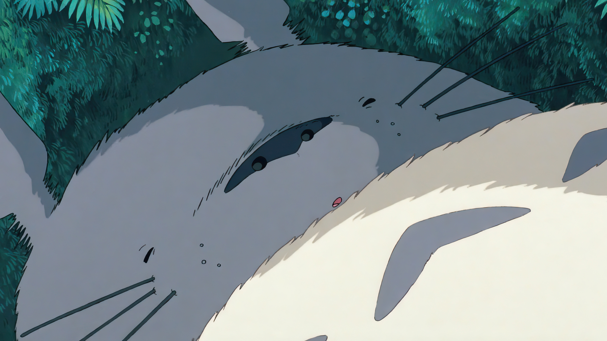

Totoro
A friendly forest spirit and the guardian of the woods.

Mei Kusakabe
A curious and brave young girl who befriends Totoro.

Satsuki Kusakabe
Mei’s older sister who is protective and kind.
Catbus
A magical, multi-legged cat bus that helps Totoro and friends travel.

Chu and Chibi Totoro
The blue and white Totoros who follows the big Totoro.